Styling Assistant Mobile Application
Project Overview
This UI/UX project is a fashion app that helps users build and develop their personal style through curated recommendations, outfit planning, and wardrobe organization tools. The goal being to function as a digital closet and styling assistant, allowing users to upload their current wardrobe, receive AI-generated outfit suggestions based on their saved preferences and the latest fashion trends, and even shop smarter by seeing how potential purchases fit within their existing style.
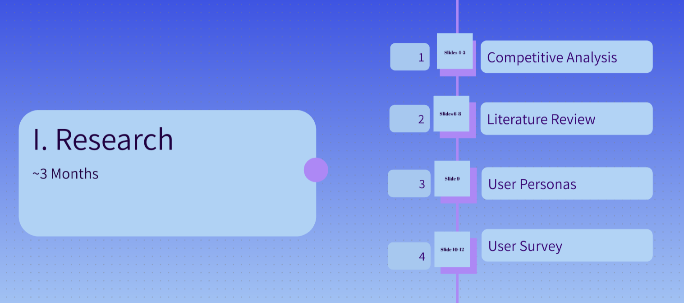
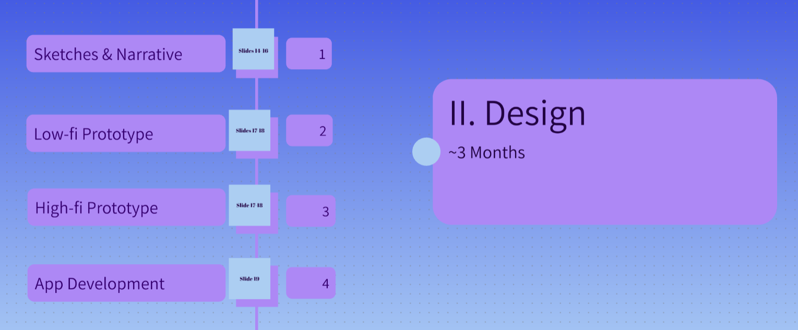
i.Research
Competitive Analysis
While considering potential competitors and sites with features that we wanted to consider in our own development, we compared four websites: Pinterest, Everskies, Grailed, & Depop.
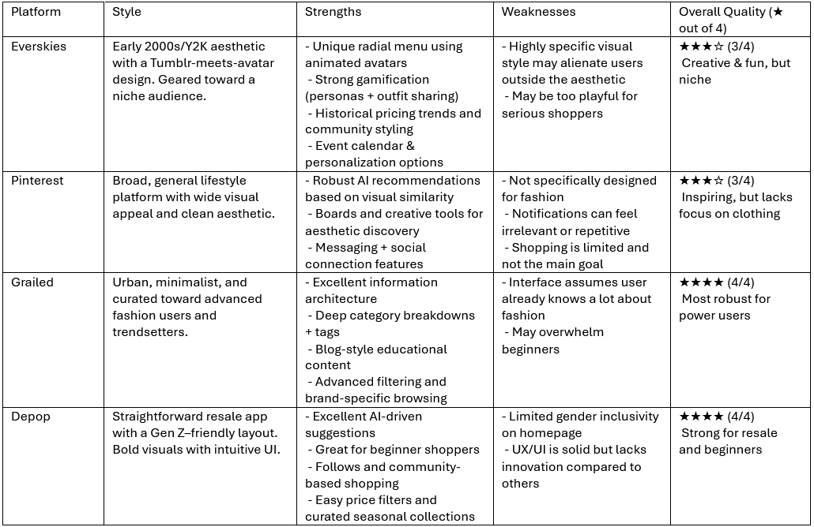
Literature Review
Building on our competitive analysis, we conducted a literature review, drawing on academic sources to validate our theoretical approaches. This research highlighted two critical areas for STYLX: the potential of Gamification & Personalization in fashion retail, and the impact of AI in trend forecasting and user experience.
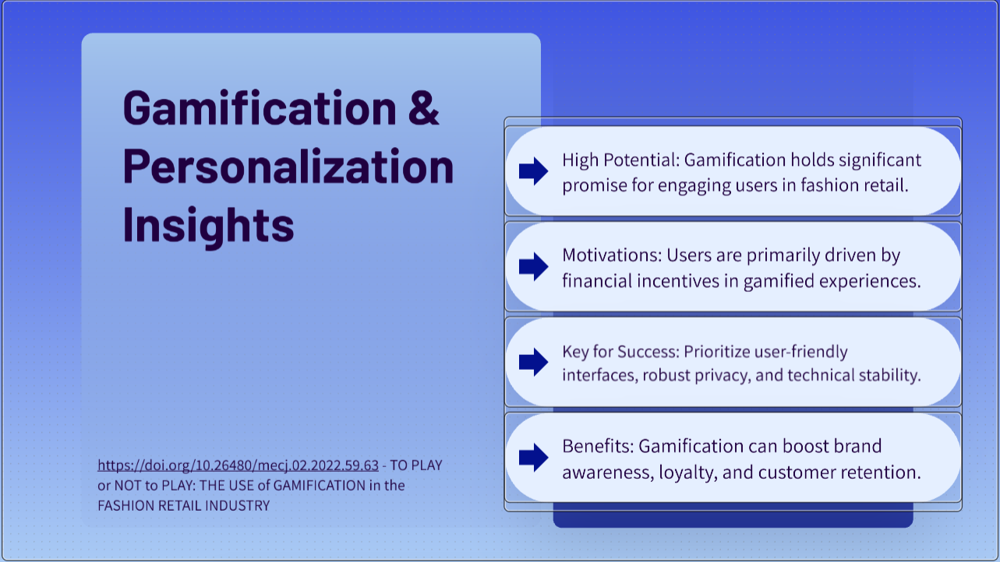
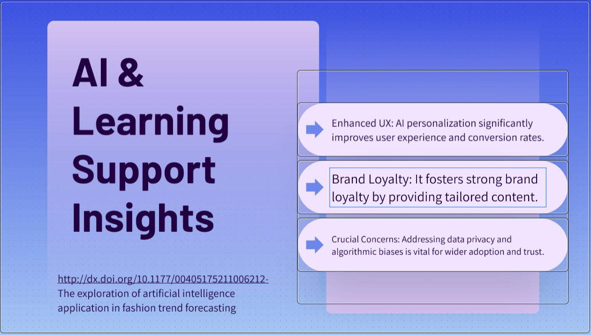
User Personas
The following persona was derived from clustering common patterns in preferences, pain points, and goals from the research, ensuring design choices target distinct but representative audience segments:
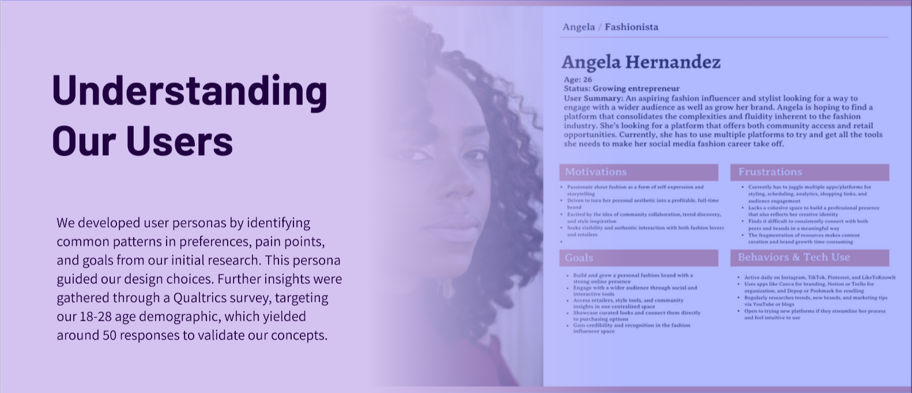
User Survey
We set out to research our proposed age demographic of 18-28 with our design concepts in mind, using Qualtrics to gain insights and ask questions in the form of a survey we published online with around 50 responses.
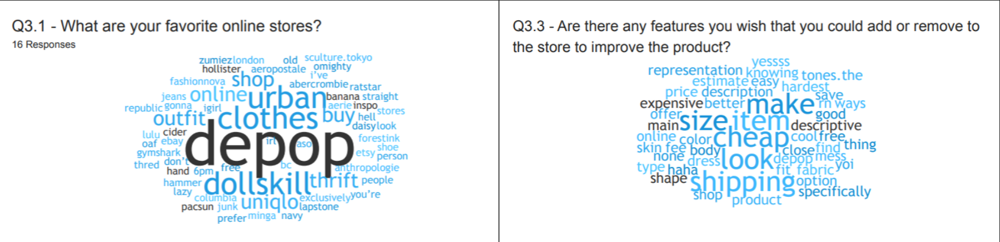
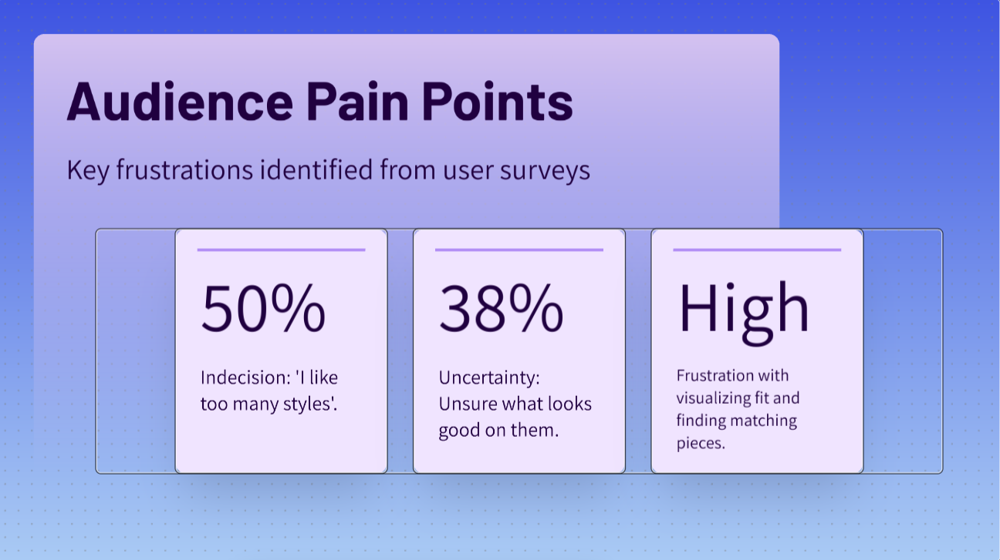
ii.Design
Storyboards & Wireframe
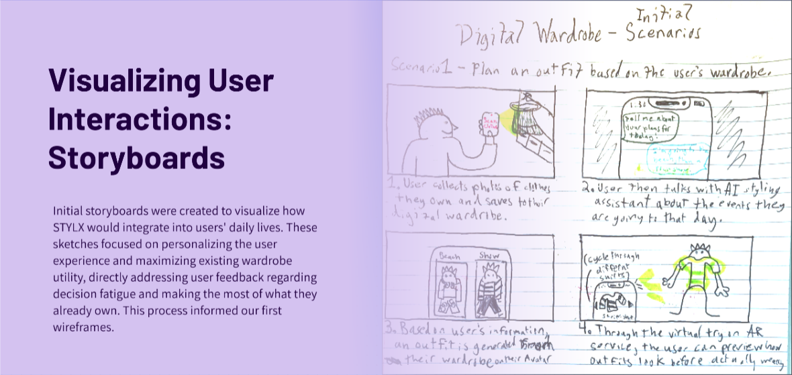
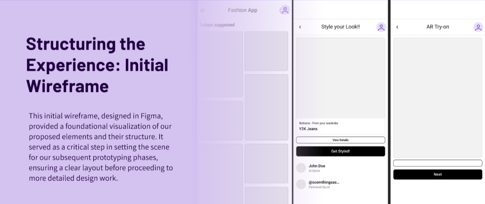
Low-Fidelity Prototype
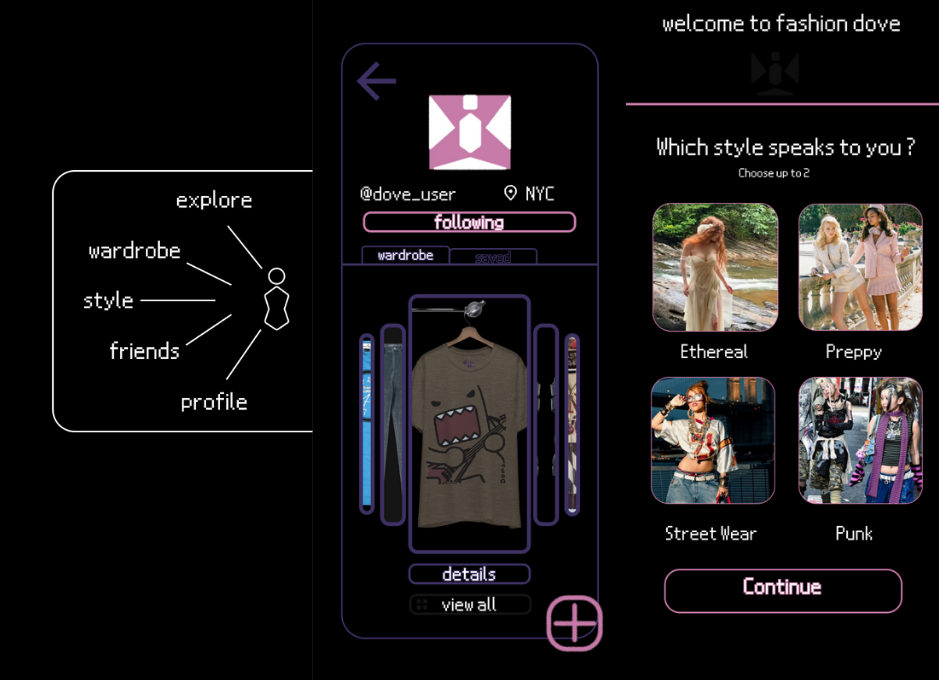
High-Fidelity Prototype
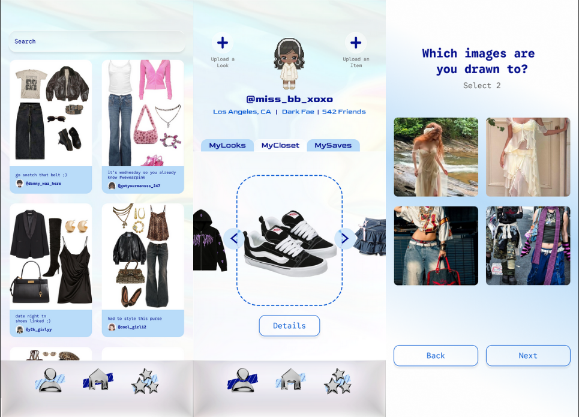
Final Product: React Native Application
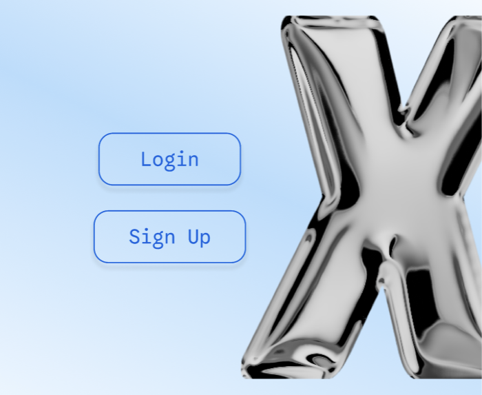
View Code on GitHub
Future Considerations
Through our process of research and design, we were able to create an interface from the ground up of a system that could act as a styling assistant app that is fun, backed by research, and conducive to the user experience. In the end, we performed usability testing with the Figma design in Maze and gained further insights to iterate our design before & after coding the application. This highlights the impact of costly redesigns and stresses the importance of the design process before development.